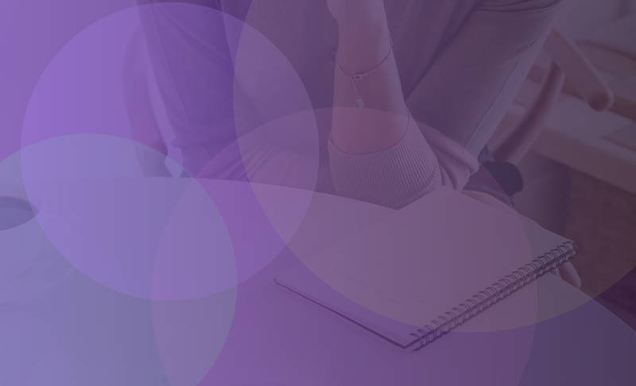
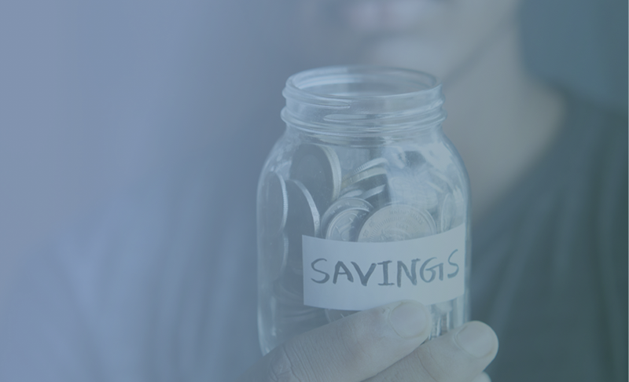
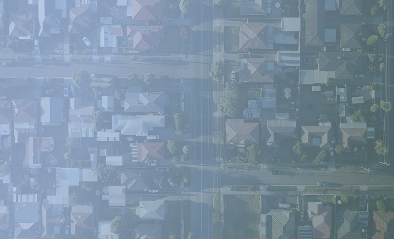
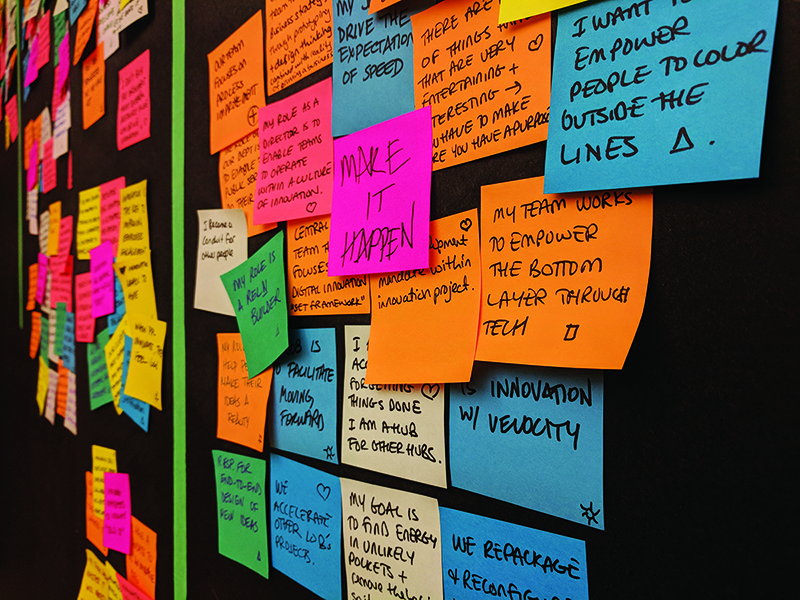
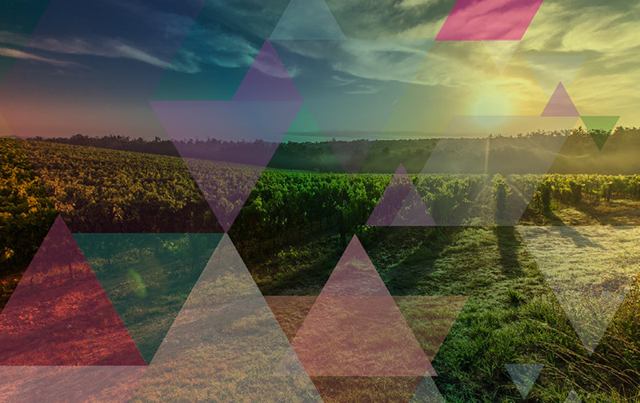

Service & Experience Design Leader
Twenty-five years, five chapters: Print, branding and advertising, a master's in strategic foresight, a steep learning curve into financial services, and now leading UX inside one of Canada's largest banks. Every chapter evolved how I think.
Still asking the same question
I completed a master's in Strategic Foresight & Innovation while working full time, and researched how innovation actually survives inside large bureaucratic organizations. That question is the foundation of how I'm thinking about AI right now — not as a tool to deploy but as a shift that requires the same conditions as any meaningful change: the right people, the right questions, and someone willing to stay in the room long enough to get it right.
Seven years inside financial services
First helping build a service design practice at CIBC, then leading a UX team at TD. I know what it takes to do this work inside organizations that weren't designed for it — you facilitate the right conversations, build trust along the way, and make the value of design legible to non-designers.

Service design applied to workplace gender equity. Redesigning listening circles to counter balance organizational power dynamics.
Two colleague-facing tools — a GIC rate exception tool and a RESL mortgage rate platform — that became proof of what design-led thinking can unlock.
Research across three cultures and two continents led to a content strategy grounded in lived experience, not institutional messaging.

A year of ethnographic research on savings behaviour — and what it actually takes to help clients build better habits.
Research-based prioritization that surfaced a gap between what frontline advisors needed and what leadership assumed to be true.
Reducing a preapproved application from 8–10 pages to 2 — and setting a design standard that has since traveled across credit products.

Understanding why mortgage clients were leaving mid-term — and what the bank could do earlier to keep them.

Master of Design Major Research Project exploring why the gap between innovation intent and institutional reality exists — and what it takes to close it.

Strategic foresight exploring the future of food production, directed towards investors in food growing & distribution. Winner of 2018 APF Graduate Group Award.